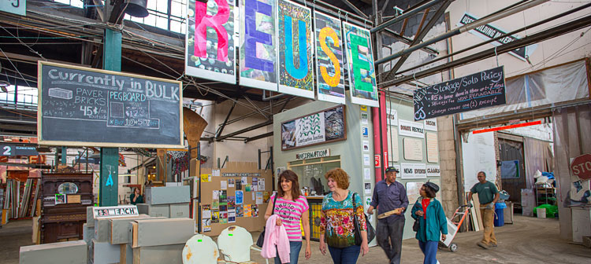
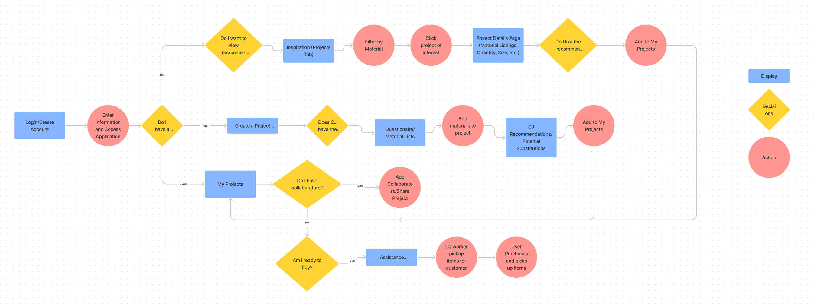
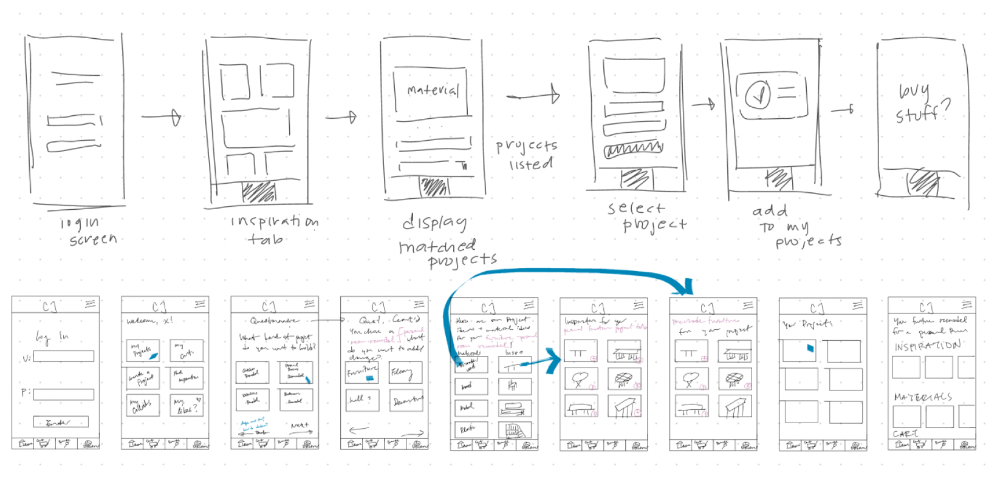
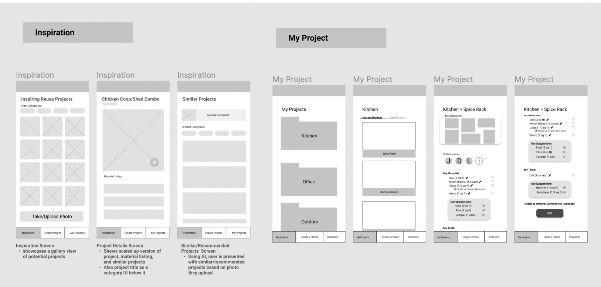
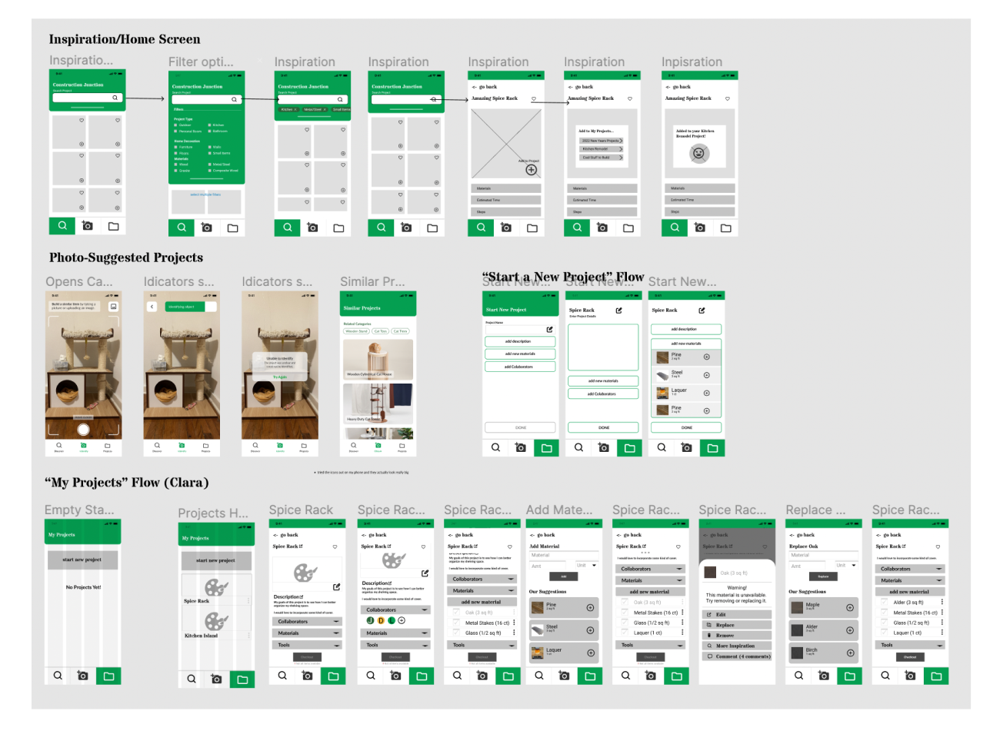
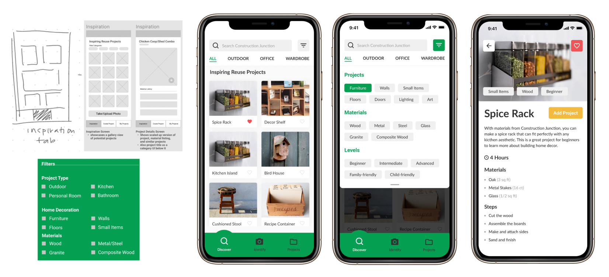
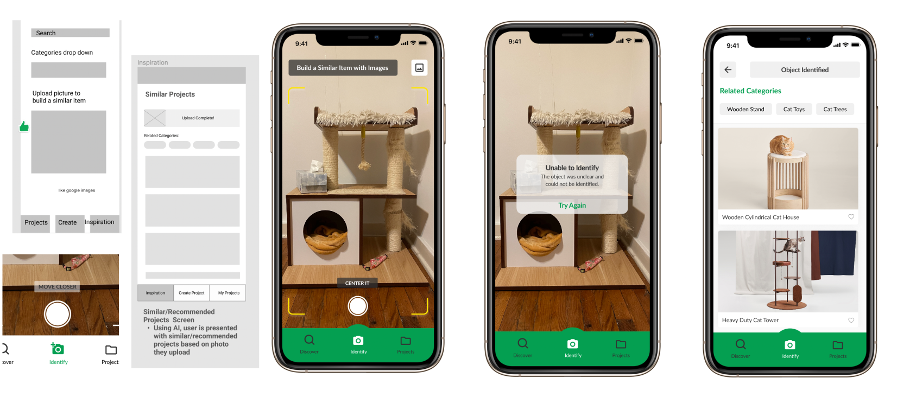
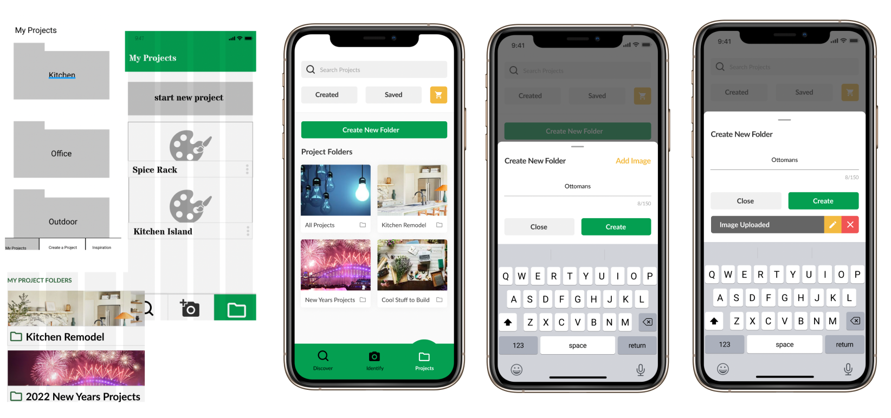

Project Overview
CJ Creates was an eight-week mobile service design project focused on providing service innovation for the Pittsburgh non-profit Construction Junction. While researching, my team discovered that the primary breakdown in the customer journey was connected to the rotating inventory since Construction Junction materials are either recycled or donated.
To provide an innovative service for consumers, and further promote the organization’s goal of sustainable reuse, we created a mobile service that provides projects based on the available materials and items in inventory.
Problem Statement
Due to Constructions Junction’s large rotating inventory, it is can be difficult for consumers to recognize potential methods of utilization for the available materials. There is an opportunity for Construction to be proactive, and help their consumer discover projects that would be applicable to their lives.
Domain Research
To best understand the problem space, our team conducted broad background research on Construction Junction. This research included elements such as the history, organization, operations, technology, competitors, and goals. During the exporation process, we discovered the Construction Junction’s core offers are focused on donation, recycling, deconstruction services, and retail.
To help fufill sustainability goals, Construction Junction aims to participate in a circular economy through the resell/repurpose of deconstructed materials and items. They are also maintain various community partnerships, and working with local Pittsburgh businesses.
Clear connections we have identified were: (1) Government, (2) Business/Non-Profit, (3) Environment, and (4) Community
Stakeholders
Our process for identifying stakeholders was mainly by investigating Construction Junction’s website, Facebook page, LinkedIn Page, and associated program outreach pages. We were also lucky enough to have someone on the team who could explain some of the dynamics beyond our deskwork investigation. We were able to hone in on a few key groups, including the administrators and general workers (blue), community engagement officers (purple), direct consumers (yellow), and funding sources (green).
User Flow
Sketches
The main takeway from the wireframes was the key format of the navigation tabs, and how the interactions for each taks (inspiration, creation, organization) worked together to support the showcase of projects for the mobile service.
Low-Fi and Mid-Fi Prototype
During this phase, a important questions emerged: How do we account for unavailable items within a rotating inventory? We strived to solve this through the buy/assistant shopping user flow that illustrates how the user may confirm their purchase of materials. From our feedback, we learned that there was room for improvement for this interaction. Since our main focus was to emphasize the availability of the material/item, our team decided to focus on notifying the user of the current status of material inventory rather than the entire checkout process.
During this phrase, our team began to see what data could potentially be collected and utilized by Construction Junction. The application would collect explicit data such as popular projects and materials. Alot of data can be gain from the photos that user take and upload to the application. For example, if a user take a photo of a desk, utilizing an AI or machine learning program, the application will gain data on materials used, types of items, and context/location of the item. From this information, Construction Junction would have the ability to construct implicit data to elablish metrics and connect them to types of projects or materials on the application.
"Inspiration" Interaction
"Identify" Interaction
"My Projects" Interaction
Results
Our process for identifying stakeholders was mainly by investigating Construction Junction’s website, Facebook page, LinkedIn Page, and associated program outreach pages. We were also lucky enough to have someone on the team who could explain some of the dynamics beyond our deskwork investigation. We were able to hone in on a few key groups, including the administrators and general workers (blue), community engagement officers (purple), direct consumers (yellow), and funding sources (green).